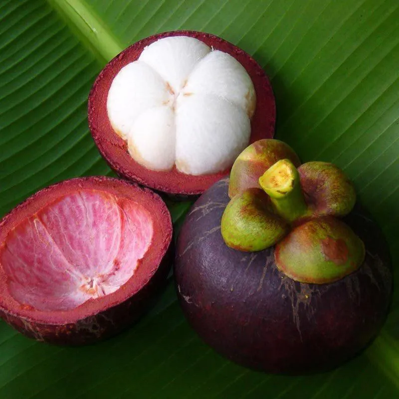
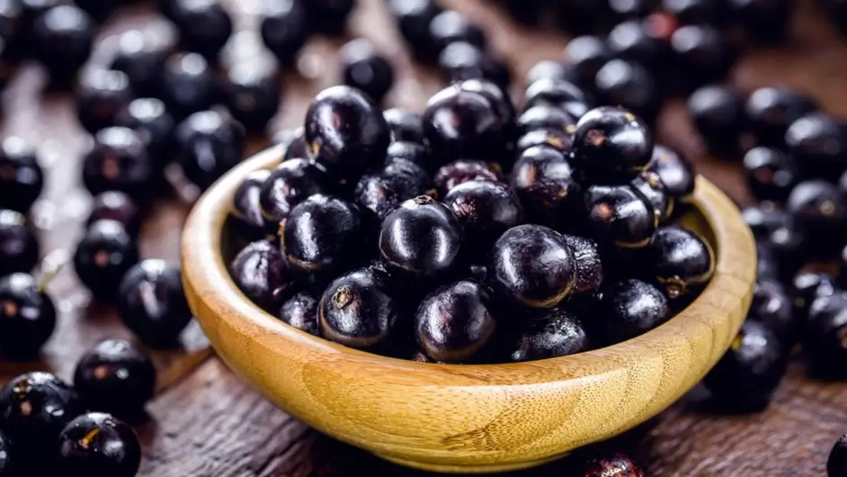
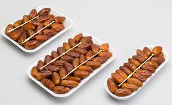
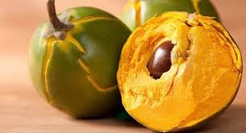

top 10 melhores frutas do mundo
1.Mangostão (Indonésia)
2. Jabuticaba (Brasil)
3. Deglet Nour (Tâmara da Tunísia)
4. Rodakina Naoussas (Pêssego da Grécia)
5. Morango Cassubiano (Polônia)

6. Wiśnia Nadwiślanka (Cereja da Polônia)
7. Açaí (Brasil)

8. Lúcuma (Peru)
9. Limão de Sorrento (Itália)

10. Tangerina de Quios (Grécia)